CCM-01
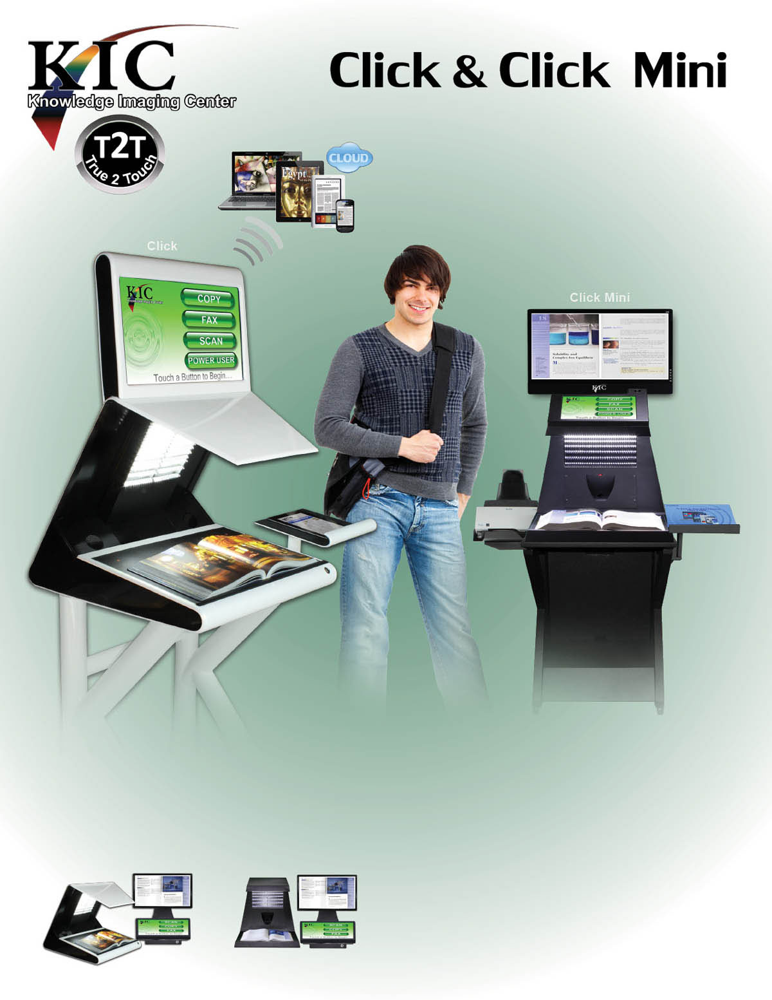CAPTURE, COPY, FAX & COLLATE BOOK CONTENT
Affordable Face-up Book Scanning for the 21ST Century Library
Study, Report, Research, Collaborate ... Digitally
The KIC Click is a high-speed, face-up book capture system at an affordable price. Its sleek and elegant look will complement any library floor. And with its True2TouchTM user interface, KIC Click is as easy to use as it is beautiful. Are there any compromises? You decide.
The KIC Click captures nearly 20 book pages per minute for instant access on tablets, notebooks, smart devices and easy transfer to desktop PCs and servers. With a bed size 30% larger than its nearest competitor, it captures up to 22 x16 inch books and materials at an uncompromising resolution of 300dpi.
Photocopiers, PCs, monitors and keyboards clutter up otherwise beautiful libraries across America. The smooth but rugged black or white KIC Clicks totally reverse that trend, adding beauty to even the most beautiful libraries.
KIC Click Tabletop
KIC Click Mini Tabletop
CCM-02
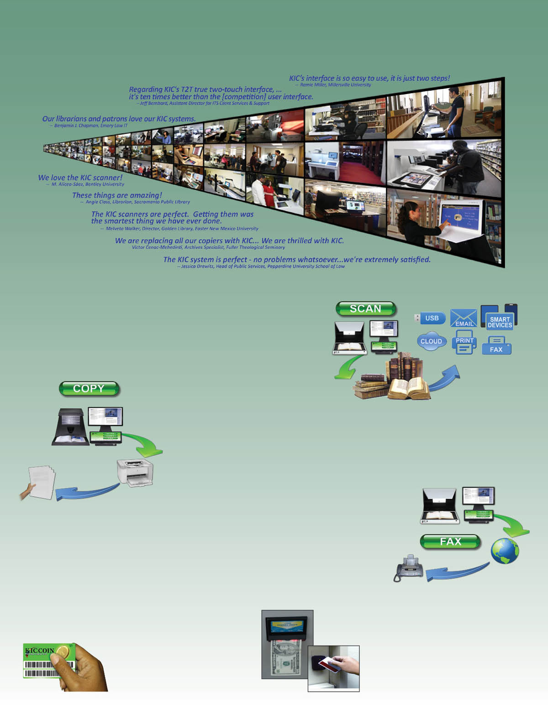KIC Serves Over Half of Students at Universities in America
In the U.S. alone, KIC serves over four million students at the top "brick and mortar" (non-online) colleges and universities. With the introduction of the KIC BookEdge, KIC Click, and KIC Click Mini, KIC is now affordable for virtually all institutions of higher learning and full-service public libraries. Last decade, libraries typically 'added' several KICs, but since 2010 libraries have begun to replace their entire patron-use copier fleets with self-serve book scanning systems.
A True Digital Age Multifunction System for Academic & Public Libraries
Book Scanning
Students at academic libraries want speed, and "../../images/Dlsg/KIC offers the fastest book scanners on the market. Patrons at public libraries need simplicity, and KIC provides three of the simplest possible user interfaces, one exclusively for scanning, one exclusively for copying and one exclusively for faxing. And KIC's best-of-breed power user interface is only a touch away.
Copier Replacement
While multifunction copiers are partly digital, they are big mechanical machines with big
maintenance issues and tiny touch screens. As a copier replacement, KIC eliminates copier failure/service problems and provides very large touch screens and view screens that are larger still. Organizing (collating, clipping, rotating, etc.) pages on a huge touch screen is much easier than shuffling paper.
The digital age has steadily driven down the demand in libraries for paper copies to levels that make it increasingly difficult to justify copiers. KIC self-service scanning systems reduce copier use further - to the point that attaching a small laser or ink jet printer is sufficient. KIC
systems also handle much larger materials than copiers, and they scan books without damaging them. However, the most compelling benefit of KIC over copiers is KIC's speed, due mainly to its face-up scanning design, which is not only significantly faster, but far easier to use.
Self-Serve Fax
KIC's huge touch screen and larger view screen make faxing extra easy. Users can compose, review, clip, crop and change brightness and contrast of the pages of a fax before sending. KIC's step-by-step process is designed for easy operation by even the most timid users. All you need is an internet connection, and "../../images/Dlsg/KIC will provide the rest at a cost so low that fax revenue can pay for the KIC system in a few years or less.
KIC Coins
Printing copies and faxing have per page costs that normally must be passed on to the user. KIC has a free, built-in method of charging users for copies and faxes.
Simply print wallet-size "KIC Coins" on regular letter-sized paper in any denomination that you like, cut them out, and sell them to users at the circulation desk or wherever you collect fees for late book returns.
KIC Compatible with Copy Card & Cash Systems
All KIC systems are compatible with all standard copy card and coin-op devices. Since KIC transfers images to users' computers electronically, costly expendables are avoided, even for color! The library can opt to keep all revenue it collects.
CCM-03
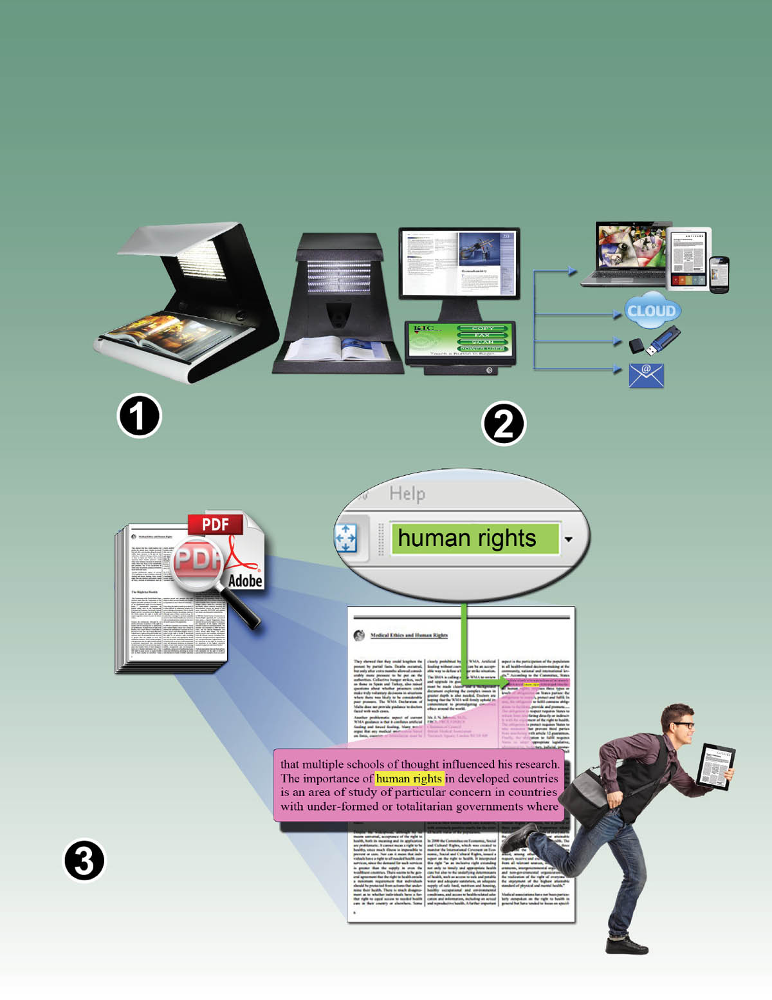KIC Makes Your Print Collections Searchable
Search hundreds of pages of PDF or text files created in just minutes using KIC Click Mini
Users need only locate the volume(s) that they expect to contain the information they are seeking, scan selected sections and output either a searchable PDF file or a text file. These files can easily be searched for various keywords.
Keyword searching is becoming an indispensable capability that significantly improves the quality and efficiency of researching print collections.
- Access more sources DIGITALLY
- Find information faster
- Deliver results in digital form
- Get your research in digital form
Scan selected excerpts from
multiple sources in just minutes.
Output text or searchable PDF
directly to a tablet, e-reader, PC
or smart phone.
Search all scanned pages
in an instant for various
key words and...
...be on your way.
CCM-04
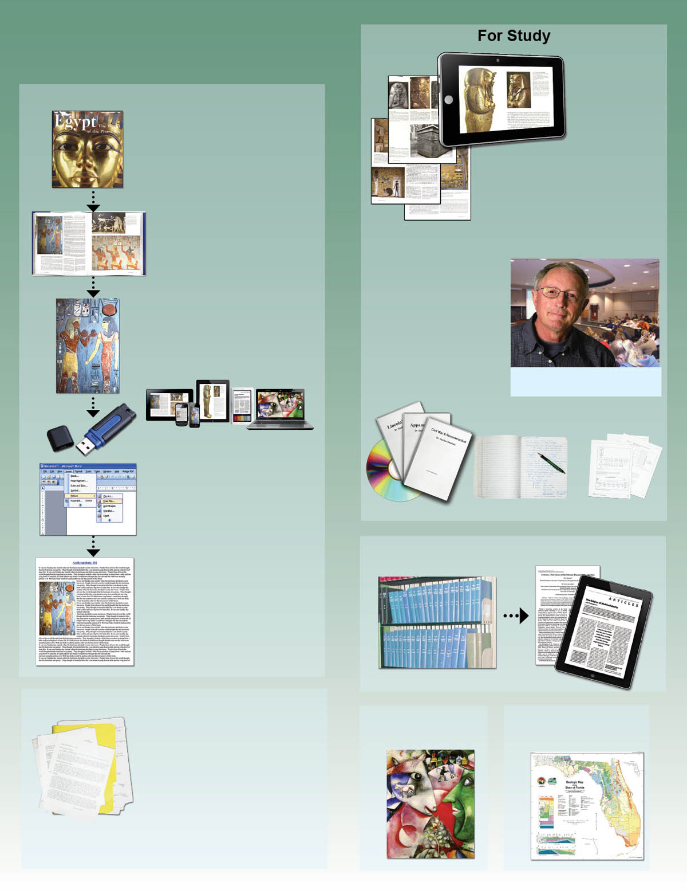In case you didn't know ...
...what you can do with scanned images
Enhance Reports
Place books face-up on
KIC Click's large bed
& capture two pages at a time
- much faster than flatbed
scanners and copiers.
Use whole pages or clip
selected pictures, graphs,
text, etc. using KIC's large
touch screen.
Save scanned images to USB
flash drive or cloud storage,
send them via email address
or transfer images directly to a
tablet, notebook PC, or smart
phone.
Enhance reports in a word
processing program. Drag de-
sired images from a flash drive,
Cloud storage or email directly
into a word processing pro-
gram, or save images to your
computer desktop and use the
'insert picture' function.
Once images are imported
into a word processing pro-
gram, you may want to resize
or reposition them or select
from several ways that your
text can wrap around the
pictures.
Quickly scan many pages
to take with you and study
at your convenience in
the comfort of your home
where you can read, search,
markup, and print at your
leisure.
Book Excerpts
With KIC in your library,
instructors are no longer
restricted to a single text
book. They can freely
assign many excerpts
from many books without
adding to the students'
already high cost of text
books.
Course Materials
Class Notes
Class Handouts
Personal & Family Documents
Library patrons bring loose
paper from home to scan,
fax and send via email or
save to a USB device. A
$5 USB thumb drive can
store thousands of important
documents.
Scan Journals for Research
Scan Artwork
Scan Large
Maps & Drawings
"I selected excerpts from eight books and created the text book I use for my Civil War class."
Many citizens don't have a safe, reliable place to store and organize their important documents. Documents scanned at the local library can be viewed with any low cost smart phone.
CCM-05
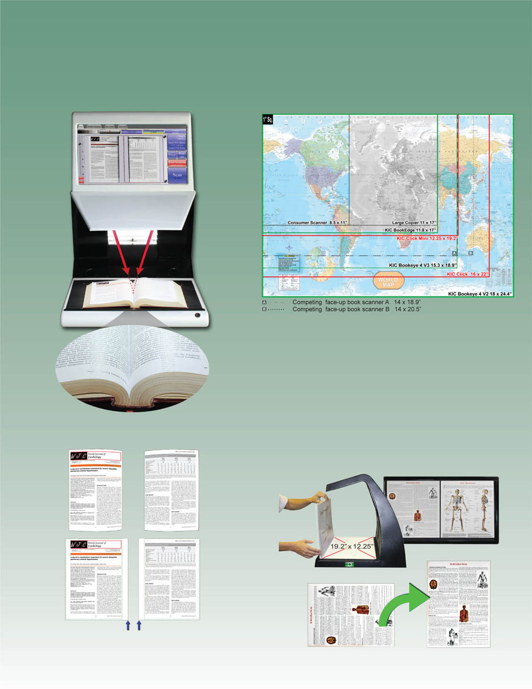Beautiful Images - Fast and Easy, and Nondestructive
Capture Deep into the Bookfold
KIC Click's Dual Cameras are Set at the Perfect Angles
Most books curve at the spine - some rather dramatically. KIC Click gets deep into the bookfold of tightly-bound volumes by capturing from two angles, and easily straightens out the worst curves, producing clear, professional quality images.
Capture Area Comparison
KIC Click's ample 16 X 22 inch capture area is over 50% larger than that of 11x17 inch copiers and twice that of typical consumer scanners. It handles a large percentage of books that are too big for an 11x17 inch scan bed, scanning them two pages at a time without damage to their spines.
KIC Click's high speed is derived as much from its ultra-simple, true two-touch interface as from its face-up design that obviates the need to flip books over and over again during the capture process.
KIC Click's sleek look and elegant design put the full KIC self-serve digitization functionality into a mere 25 inch width. Its large, 22 inch touch screen and capture surface are at the perfect heights for quick, standing operation when placed on a typical table or its optional K-legs.
Fast, Face-Up Scanning that Captures
Into the Book Fold Like No Other Machine
Thick Books...No Problem
KIC Click handles thick books beautifully.
Text is clear and undistorted. KIC automatically adds
margins for print-ready image quality.
Capture Oversized Books
KIC Click Mini's generous 12.25 X 19.2 inch capture area is 27% larger than that of 11x17 inch copiers and about twice that of typical consumer scanners. It easily handles books that are too big for an 11x17 inch scan bed, scanning them two pages at a time without damage to their spines.
Very large volumes can be scanned side-
ways, one page at a time and rotated.
CCM-06
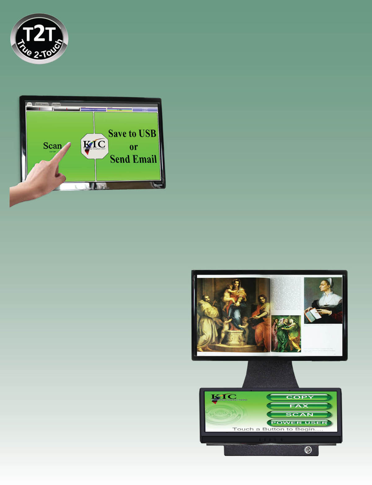True 2 TouchTM User Interface
Ease-of-use is a central feature of KIC. The KIC Click's large touch screen and its large "Scan" and "Save, Send or Print" buttons that occupy a very large portion of the touch screen clearly convey how easy KIC is to use. The Save button defaults to an output method and file format that is selectable by the institution. If a flash drive is inserted, KIC detects this and the output button changes to indicate that it will save to the flash drive. Users can override the default output method by manually selecting one or more alternative methods of output.
KIC's True2TouchTM User Interface, Especially Forgiving for Beginners
- KIC is very agile, and allows the user to jump from just about anywhere in the touch screen system to just about anywhere else, directly and usually with a single touch. This modern, 'modeless' design is easier to use, but difficult to create.
- KIC's large buttons and controls are easy to use, even for people with unsteady hands.
- KIC gradually expands and contracts controls such as brightness, con- trast and DPI so users can easliy follow their screen activity
- KIC doesn't delete original images when you clip a photo or excerpt of text unless you tell it to.
- KIC lets you output to many different destinations in a single session.
- Once you've scanned a document, you can change your mind as to where you would like it to output. For example, you may have wanted to save to USB, but learned your USB drive is full. Or you may scan so much that it exceeds your email limit. Or after scanning and collating a mass of research, you decide that you want to share the research with others.
Two Large Screens for Simplicity & Power
It's easy to undervalue screen size. For 20 years, all cell- phone makers relentlessly pursued smaller and smaller screens until very recently when one company reversed that trend. They realized that people want the largest screen that will fit in their pocket/purse and hand. This is because dis- play screens are our window to the digital world, and touch screens give us control over that world.
As big as self-serve scanning systems are, it makes sense to have a very large touch screen. And with the low prices for high quality displays, it is compelling to add a separate display screen. In 2002, "../../images/Dlsg/KIC realized this, when the first KIC system was designed. Today, with nearly 10 years more experience than any other vendor, "../../images/Dlsg/KIC has the most under- standable, easy to use and powerful user interface for self- serve book scanning, and it's based on dual screens.
The view screen shows very large, clear images of what you've scanned, allowing the touch screen to have big, easy to understand buttons and other controls.
Display screens are our portals into the digital world, and touch screens are the easiest way to control that world. That's why "../../images/Dlsg/KIC provides large, 24 inch,
full HD displays and equally large touch screens with most of its KIC systems.
Dual Screen Touch & View
CCM-07
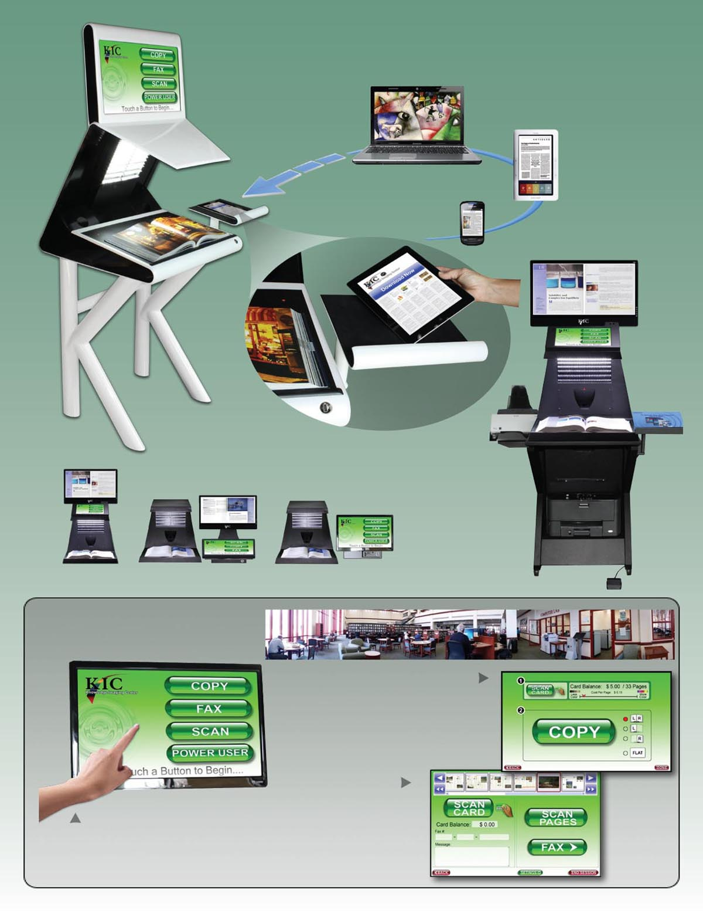KIC SmartDockTM
The Fastest, Easiest Way to Transfer Images to Tablets, Notebook PCs, eReaders & Smart Phones
Use the optional KIC SmartDock to
transfer 10-20 full-color pages per
second to any smart device with-
out using any of your institution's
precious WiFi bandwidth.
KIC Click shown here with
optional SmartDock
and matching K-legs for
freestanding operation
KIC Click Mini Floorstanding
Touch on Top shown here
with optional SmartDock,
ADF scanner, Foot Pedal,
Laser Printer, and K-stand
for freestanding operation
KIC Click Mini Tabletop
Touch-on-Top
KIC Click Mini Tabletop
with Touch & View Monitors
KIC Click Mini Tabletop
with Single Touch Monitor
For Public Libraries
Introducing KIC to Your Patrons
KIC has a special introductory interface.
For the first year in a new location,
KIC can be configured to display three
or four simple buttons: [COPY] [FAX]
[SCAN] and [POWER USER].
Touching [COPY]
will activate a very simple
'copier' interface with a large
copy button that scans and
immediately prints.
Touching [FAX]
will activate a very
simple 'fax machine'
interface.
K-23
Digitize on Demand
Born Digital
Unlike Born Digital material which must be purchased on a subscription
basis, converting print to digital with KIC can be done on an unlimited basis.
KIC converts your huge investment in printed
monograms and serials into digitize-on-demand
collections for an insignificant percentage of
the value of their content.
60% of students at US universities
are served by "../../images/Dlsg/KIC products
KIC and your print collections
together can yield thousands of
digital copies of whatever students want
CCM-08
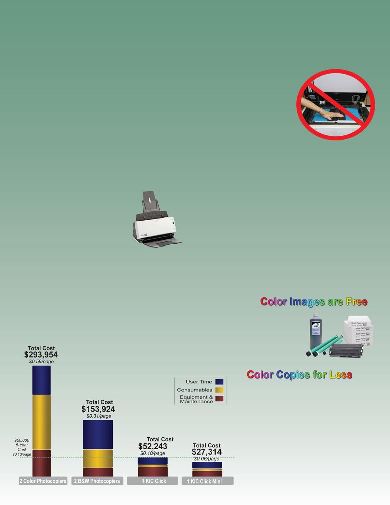KIC Bookeye vs. Copiers - How KIC Compares
Copiers are Outmoded
Since the first KIC was delivered to a library in 2004, the days of photocopiers for patron use in libraries were numbered. And now with the rapid explosion of tablet computers and electronic readers, the demand in academic libraries for electronic copies has substantially outstripped the demand for printed copies. The demand for electronic copies in public libraries is also reaching a tipping point.
The ability to capture hundreds of pages of research into a tablet or electronic reader and search through that material on the Inter- net with a tablet, eReader or notebook PC that can be used just about anywhere is highly convenient and immensely valuable. In this digital age, academic libraries are compelled to go hybrid for three reasons: 1) the high demand for digital content; 2) their ex- isting print collections contain vast amounts of information that cannot be found on the Internet; and 3) students are receptive to the price of electronic copies - typically free.
So how do the costs of KIC systems compare with those of photo copiers? There are three main factors that keep the cost of photo- copies high: 1) each copy requires paper, toner and ink; 2) photo-
copiers require a lot of maintenance due to the number of moving parts; and 3) all major photocopier brands use a distributed service model.
In contrast, these costs are lower for KIC because KIC has split the scan/copy functions into three separate machines, choosing the best of breed for each. As a result, KIC offers the best book scanners by themselves or with a loose-leaf paper (ADF) scanner. Virtually any off-the-shelf laser or inkjet printer can be added to any KIC system, so you can optimize costs and speeds, and offer affordable color.
ADF attachment scans
40 loose-leaf pages/min
(20 sheets per minute)
Click vs. Copiers
This graph compares the total costs of one color KIC Click system with two color copiers and with two black and white copiers. Both copiers are the kinds typically seen in academic libraries. One KIC Click is compared with two copiers because its face-up operation yields well over two times the performance of a typical copier. The costs are broken into three main
areas: equipment and maintenance, consumables, and patron usage time. With KIC Click, electronic output is assumed to be preferred over print 90% of the time. That ratio has ranged from 75-95% electronic in 2012, but is certain to rise in the future.
No More Book Spine Damage!
Thick books with stiff spines and content that runs deep into the bookfold are often damaged when copied. KIC Click easily captures content without damaging book spines.
KIC automatically removes black
edges, straightens content, and
produces clean, professional look-
ing images - important for elec-
tronic reserves, course curriculum
materials and research reports.
These automatic image treatment
functions also save a lot of admin-
istrator, faculty, and student time.
Thick Books...No Problem
KIC Click & Click Mini handle thick books beautifully. Their
contour-finding lasers allow it to flatten even the most curved
books and produce text that is clear and undistorted. KIC
automatically adds margins for print-ready image quality.
Click Mini Scans 3 Times Faster
Statistics from five million scanning sessions across America re- vealed a median session length of 23 pages. So, most of the time spent during a KIC session is spent scanning. Face up scanning has been proven to be three times faster than face down scanning.
So why is speed so important?
- It's economical. One Click can replace multiple copiers or other face-down scanning machines.
- It gives patrons another reason to visit your library.
- It's green. The faster it is, the more use it will get and the less the copier will be used.
In the digital world, there is no paper, toner or ink, so li- braries rarely charge for images, whether black and white or color.
Over the years, many libraries experimented with color copiers, but could never find a formula that worked. If the fees were low, patrons would copy materials with so much color that the library would spend more on ink than the fees they were col- lecting. If the fees were too high, the usage would be so low that the cost of the machine couldn't be justified.
KIC calculates the amount of color in an image before it is printed. So the fee for copies with a little bit of color can be the same as the fee for black and white copies. If a copy has a lot of color, the fee can be increased in proportion to the cost of the color ink or toner. This wonderful feature should be a simple, easy byproduct of the digital age, and it is with KIC.
Exceptional Savings
A Five Year Comparison at a Usage Rate of 100,000 pages per year
CCM-09
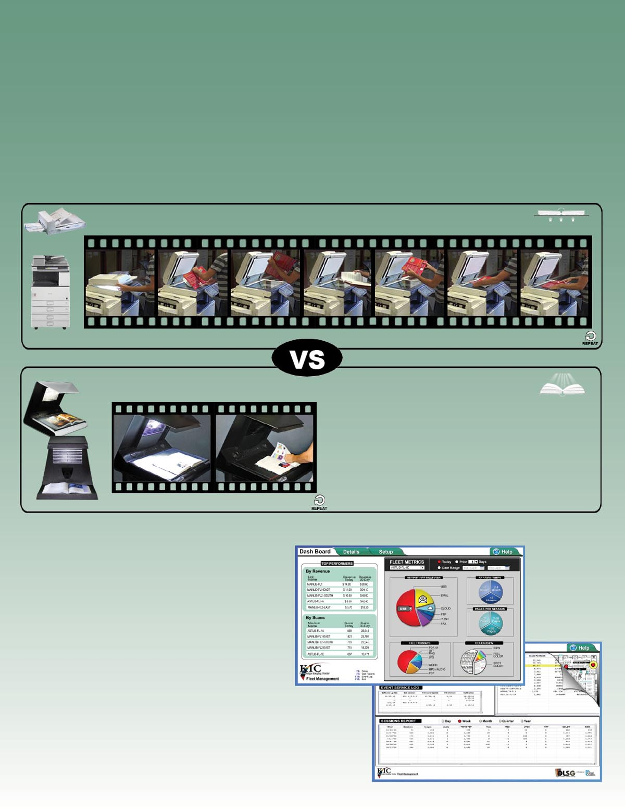Your Choice: Scan Face-Down or Face-Up
Faster is also Easier
Face-up book scanning is far easier on both patrons and books and quite a bit faster than face-down scanning.
Scanning books face-up makes it much easier to keep track of what pages you've scanned. With KIC Click, Click Mini and other face-up scanners, books stay face up, so you can see what you're scanning as you scan it. This extra visibility elim- inates the age old problem of skipping pages and scanning pages out of order which can occur with face-down scanners.
The following photo sequences show the reason that facedown scanning systems are typically 1/3 the speed of faceup systems. The book flipping necessary to scan a book on a face-down scanner like the KIC BookEdge is shown in the photo sequence below. It's a workout both for the book and the patron.
The ergonomic design of the face-up scanning sytems involves only the basic movement required to set a book down and turn a page.
Traditional Face-Down Capture
[a seven-step procedure]
Commercial Scanner
Photocopier
Modern Face-Up Capture
[a two-step procedure]
Click
Click Mini
The sequence above shows just how much work is required to use a face-down scanner to scan multiple pages.
In contrast, the sequence on the left shows the relative speed and ease of face-up scanning systems that do not require the user to flip over the book being scanned. Once placing the book, the user simply turns pages and presses the scan button (or foot pedal) to scan two pages at a time.
KIC Fleet Management
Monitor Usage Statistics at a Glance
Control,update and monitor your KIC systems remotely. To better serve your patrons, it is important to know which KIC systems are used the most and at what times during the day and week, and which are used the least. All usage statistics can help you to determine the best KIC configuration for each site. And to make it easier to navigate from KIC to KIC system, KIC Fleet Manager allows you to select a particular KIC system via either of two methods: a map or a list.
With over ten years serving libraries, KIC is the most stable product available today. However, "../../images/Dlsg/KIC engineers incessantly work to improve KIC and support the growing changing digital world. "../../images/Dlsg/KIC offers improved software re-
gularly, and in order to make it easier to deploy updates, KIC Fleet Manager lets you update KIC systems remotely. For example, a recently released feature lets you turn KIC systems on and off on demand or on a schedule set by a central control panel.
Scan 2 Pages
Lift Book
Flip Book
Turn Page
Flip Book
Lay Down
Position Book
Scan 2 Pages
Turn page
Face-Down
Face-Up
CCM-10
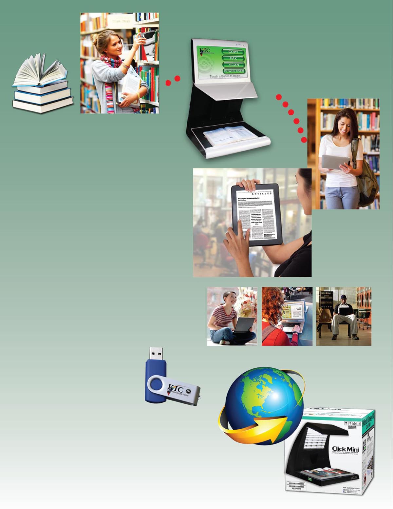The Hybrid Library
To fully earn the 'hybrid library' designation, a library's existing print collections must be available in digital format. KIC systems allow your students and faculty to select material for quick and easy self-serve digiti- zation, providing a valuable conduit between your print collections and patron tablets, PCs, eReaders and smart devices.
KIC's self-serve digitize-on-demand capabilities leverage your library's most valuable assets - its print collections.
Digital images don't have the limitations of physical copies. They can instantly be shared with fellow researchers around the world via email or Cloud, dramatically facilitating collaboration.
KIC avoids the digital rights management conundrum. Each digitization is for a single use, but thousands of patrons can digi- tize content from the same book, yet preserve the book's spine.
Resource Sharing
We know the importance of resource sharing. To help squeeze more value out of your investment, KIC can be configured to support the BSCAN Interlibrary Loan system, the Opus Digitiza- tion Workflow system, and general ad hoc scanning.
Use a USB flash drive to enable other types of scanning at a KIC station and temporarily access shared folders on a network. When you unplug the USB, the KIC station automatically returns to its regular self-serve scanning station functionality.
For general purpose scanning by ad- ministrators and faculty, simply write a department password file to a flash drive. When a user plugs in the USB 'key', KIC recognizes the password and allows the user to save scanned images to shared folders.
Premium Maintenance Plan
Image Access has an unmatched service and support record. It is impos- sible to affordably provide service personnel living in every city and town across America that are highly trained on the very special technologies needed by libraries. Instead, "../../images/Dlsg/KIC designs remote serviceability into its products and has perfected remote diagnosis and when possible, repair.
The resulting savings allows "../../images/Dlsg/KIC to frequently and promptly provide loaner/swap-out equipment and to go on site whenever necessary to maintain and repair equipment, minimizing interruptions in service for your patrons.
CCM-11
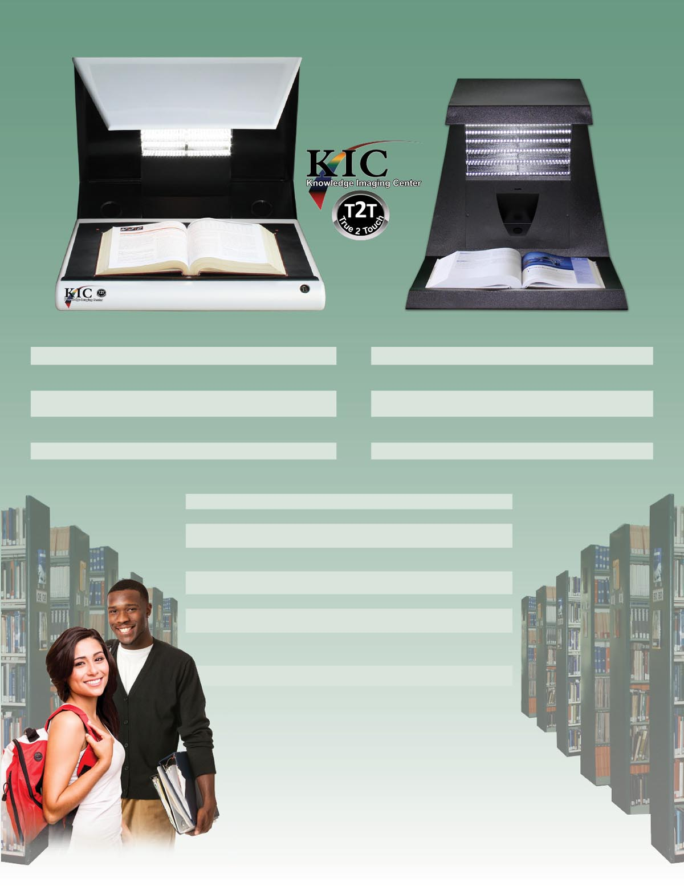Technical Specifications
KIC Click
KIC Click Mini
Max Capture Area
22 x 16 inches
Max Capture Area
12.3 x 19.2 inches
Maximum Speed
2.1 sec (full bed); 3.7 sec per page for multiple
pages; 37 seconds for 10 pages at 300 dpi
Maximum Speed
0.5 sec per page for multiple pages;
109 seconds for 30 pages @ 300 dpi
Dimensions
(HxWxD)
Tabletop Model: 23 x 45 x 27 inches
K-stand Model: 68 x 25 x 27 inches
Dimensions
(HxWxD)
Tabletop Model: 20 x 20 x 20 inches
K-stand Model: 67 x 20 x 20 inches
Weight
Tabletop Model: 98 lbs
K-stand Model: 110 lbs
(PC not included)
(PC not included)
Weight
Tabletop Model: 35 lbs
K-stand Model: 95 lbs
(PC not included)
(PC not included)
Power Consumption
140W Operation
Power Consumption
120W Operation
KIC Click & Click Mini Common Technical Specifications
Output Color Depth
24 bit color, 8 bit grayscale & 1 bit B&W
Max Resolution
300 dots per inch
Digital File Interfaces
USB 2.0, email, FTP, Web/Cloud storage (e.g.
Google Docs), file folder (for staff & faculty only)
Image Output Formats
PDF, JPEG, PNG and TIFF
rich text and searchable PDF (optional)
Audio Output Formats
MP3 audio text-to-audio (optional)
Printer Interface
10/100/1000 megabit Ethernet or USB 2.0
Printed Output Formats
8.5 x 11", 11 x 17", simplex, duplex, color &
13 x 19" monochrome (printer not included)
Image Treatment
Functions
Split pages (left & right), clip, crop, change
brightness/contrast, change resolutions
(dpi), select color, grayscale, or B&W
Lamps
White LED's, no IR/UV emission
- Copy two face-up, full-color pages with a single touch
- Create full color electronic images and/or paper copies
- Review electronic images before saving or printing copies
- Collate by dragging images into proper order with your fingertip
- Select file formats such as PDF, JPEG, PNG, TIFF, even MP3 (audio)
- Simply place your smart device on KIC's optional SmartDock and with
just two touches, you are ready for very high-speed transfer. - Sending scanned images via email is also fast and easy with hot-keys
that are pre-programmed with your institution's base email address. - Output to Google Docs / Google Apps for Education and other cloud-
based tools can also be simplified with pre-programmed hot-keys. - Insert a USB flash memory device and KIC auto-selects USB output.
CCM-12
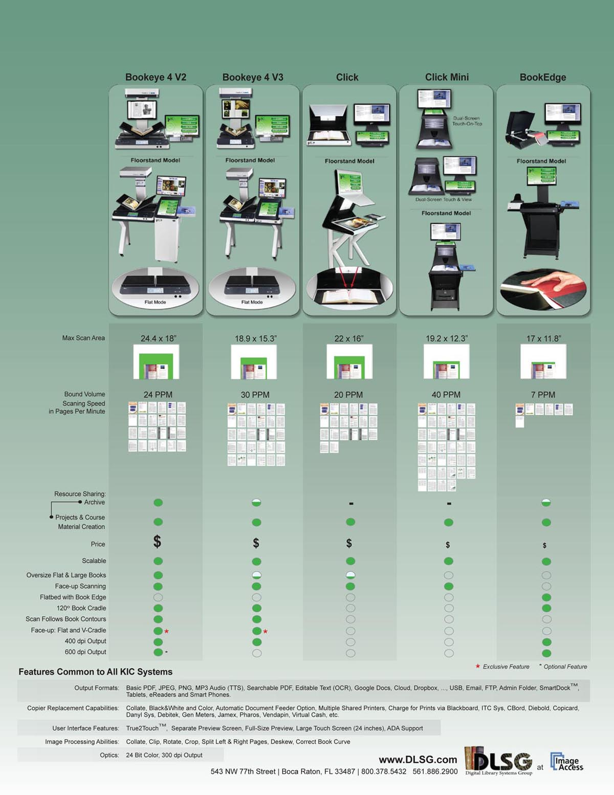The KIC Product Family
Your dollars go futher with our complete KIC product line. Every institution would like to have at least one large KIC system, especially
for reading rooms and reference sections, but not all library floor locations require a large system. Our array of products lets you get as
many bigger systems as you need and fill out the rest with lower-cost systems.
K-16
 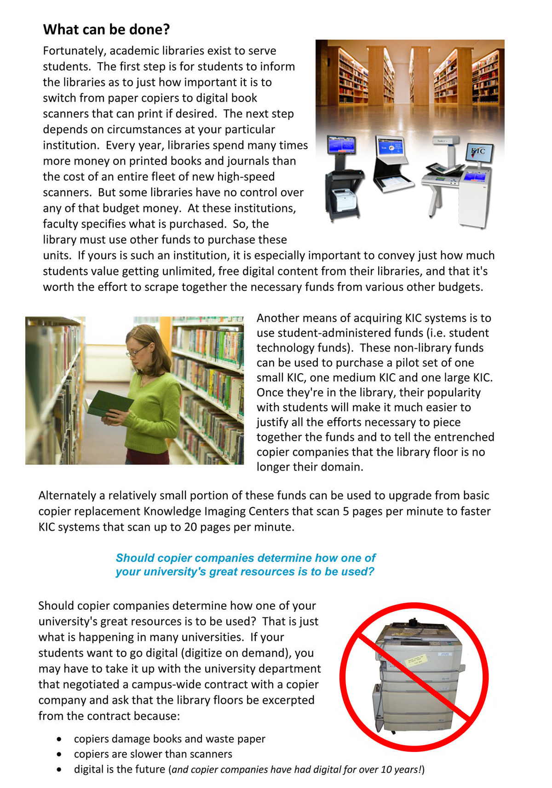
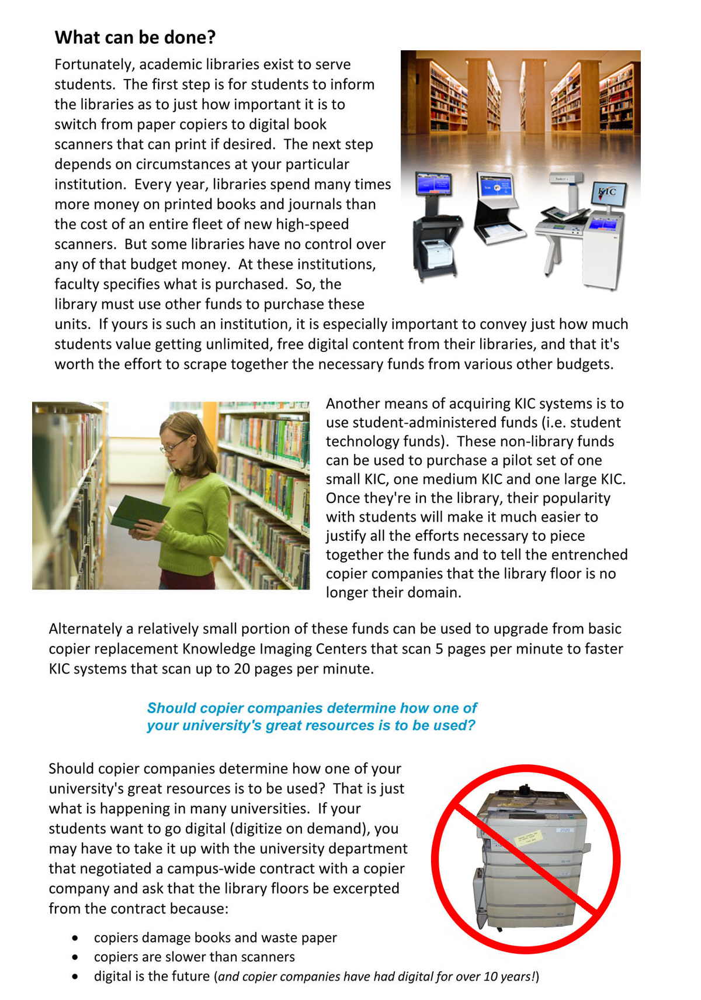
Click & Click Mini Scanners
Click™, Click Mini - developed specifically for the self-service market
When people see the new KIC Click™ or Click Mini for the first time, the most common expression is "it's so beautiful." And with True2Touch, it's as easy to use as it is beautiful. Our new and exciting Click Mini book scanner achieves a far more affordable price point for face-up book scanning than ever before. Are there any compromises? You decide.
The KIC Click™ captures book content as fast as 1 page per second! With a bed size 30% larger than its nearest competitor, it captures up to 21x16 inch books and materials at an uncompromising resolution of 300dpi.
The KIC Click Mini captures 30 book pages per minute! It produces sharp, clear images in full color at 300dpi for instant access on tablets, notebooks, smart devices and easy transfer to desktop PCs and servers. Its 12.25 x 19.2 inch bed size is significantly larger than double-letter and is large enough for most book pages. Very large books can be scanned one page at a time sideways and the images rotated. And of course, it handles loose paper and other flat material, too.
Photocopiers, PCs, monitors and keyboards clutter up otherwise beautiful libraries across America. The smooth, triple-layer, pearlescent white KIC Click™ totally reverses that trend. It adds beauty to the most beautiful libraries. Inspired by an outstanding effort of the fledgling tablet industry to turn technology into something more like jewelry or a fashion accessory than a computer, the pearlescent KIC Click™ evokes comments like, "We care about the appearance of our library and this machine is over the top!"
The KIC Click™ and Click Mini perfectly complete the KIC family of self-serve digitizing systems. The KIC Bookeye 4 has the most durable production book scanner, the only book scanner with both V-cradle and flat modes, and the highest quality 600dpi of any scanner. The KIC Clicks are small, fast and beautiful, and the KIC BookEdge is cheaper than most floor standing black-and-white photocopiers. And since none of them use toner or paper, they're environmentally friendly and ultimately far cheaper to run than copiers.